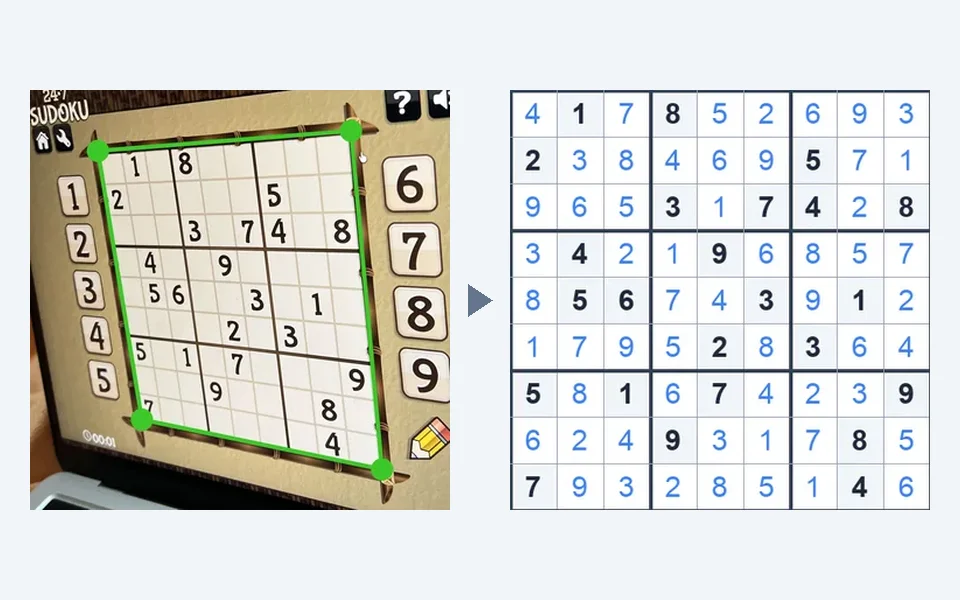

数独求解器Sudoku Solver Sudoku Solver数独求解器
拍一张报纸、书上的数独，或者截一张 App 的图，约 1 秒出答案；没有图片也能手动输入。OpenCV 与角点热力图 CNN 找网格，3.8 万参数的 CNN 读数字，用唯一解来检验识别结果。 Snap a puzzle from a newspaper, a book or an app and get the solution in about a second, or type it in. OpenCV and a corner-heatmap CNN find the grid, a 38K-parameter CNN reads the digits, and the unique solution checks the reading.
Computer visionPyTorch → ONNXFastAPIPWA